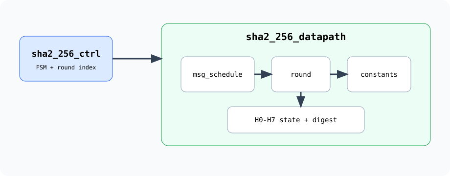
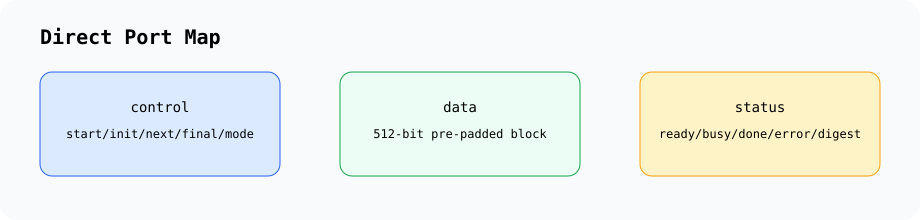
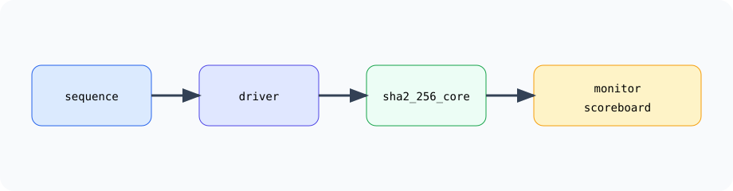

Overview
SHA-256, with SHA-224 initial values reserved as a placeholder.
512-bit pre-padded message block in big-endian word order.
256-bit digest as
{H0,H1,H2,H3,H4,H5,H6,H7}.UVM direct-port smoke environment aligned to the AES repository layout.
Architecture

Interface

sha2_256_core
├── control: start, init, next, final, mode
├── input: block_valid, block[511:0], msg_bit_len[63:0]
└── output: block_ready, busy, done, error, digest_valid, digest[255:0]Verification Flow

Synopsys VCS Build
make lint
make compile
make run
make run UVM_TEST=sha2_256_single_block_testRepository Layout
.
|-- inc/ SHA-256 macros and undefines
|-- rtl/ Synthesizable SHA-256 RTL
|-- uvm/ UVM verification environment
|-- docs/ Documentation source
|-- filelist.f RTL/UVM compile filelist
`-- Makefile Lint, compile, run, coverage, and clean targets